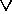

User Manual
svlis@bath.ac.uk
Copyright © 1994, 1996, 1999 Information
Geometers Ltd and The University of
Bath


Next:BibliographyUp:SvLis
IntroductionPrevious:Afterword
Subsections
SvLis User Manual
Introduction
This manual contains a description of all of svLis's procedures, functions,
and operators. It is intended as a stand-alone description for reference
by those already familiar with svLis, either through having read this book
on
it or through having used the software, or both.
SvLis is a set-theoretic geometric modeller written in C++
that uses object-orientation and operator and function overloading to allow
geometric computing to be done efficiently.
On
the question of operators, I use  for a few things (e.g. exponentiation, symmetric difference) that usually
bind quite tightly under normal arithmetical rules. The
(XOR) operator has pretty low precedence in C/C++
(lower than +, for example). As C++ doesn't
allow one to change operator precedence, you have to use brackets.
for a few things (e.g. exponentiation, symmetric difference) that usually
bind quite tightly under normal arithmetical rules. The
(XOR) operator has pretty low precedence in C/C++
(lower than +, for example). As C++ doesn't
allow one to change operator precedence, you have to use brackets.
Before calling
any other svLis procedures, you must call the function
void svlis_init()
to get things started. There is a corresponding int
svlis_end(int i) function that copies its argument to its return
value, so the broad pattern of a svLis program is:
#include "svlis.h"
int main()
{
svlis_init();
// ... Do some work with svLis ...
// An error exit:
if(things_have_gone_horribly_wrong()) return(svlis_end(1));
// Or any non-0 value
// A successful exit:
return(svlis_end(0));
}
The files mentioned in the descriptions below reside in three sub-directories
beneath whichever directory svLis is installed in on your system.
The directory include contains the .h files, and the
directory sv_user contains user-modifiable C++ source code (which
always, in svLis has the extension .cxx). If you have a
source-code
licence, other source code resides in the directory .src,
otherwise these files will not be available to you and will only exist
in compiled form in a library. Files that are always available are
in red in what follows.
In all the descriptions below, the arguments of functions
are, of course, given their types--for example
plane_line(sv_plane f, sv_line l).
In almost all cases the actual functions acquire their arguments by reference:
plane_line(const sv_plane& f, const sv_line& l)
This is more efficient for classes and structures (it saves a lot of copying),
but would make this documentation cumbersome to read (and to write...)
so it has been left out here; if you really need to know, look at the appropriate
.h
files.
In almost all cases, the member functions of svLis classes leave the
parent object unaffected--they are const functions--and return
a new object which is the result of applying the function to the parent
object. Thus one often writes code like:
sv_model ma, mb;
// ...
mb = ma.facet();
in order to retain the original object (ma) and to generate a
new one (mb). However, it is equally common to write
ma = ma.facet();
which overwrites the original. SvLis's internal memory management makes
such overwriting very efficient.
Errors
Whenever svLis detects an error it calls an error-handling procedure:
void svlis_error(char* p, char* mess, sv_err level)
This procedure is user-modifiable (it is in the file
sve.cxx),
so you can write your own error handler if you want. The string p
is the name of the procedure in which the error occurred, the string mess
is a message that describes the mess, and level is an indication
of severity. The severities are (in increasing magnitude of catastrophe):
SV_DEBUG,
SV_COMMENT,
SV_WARNING,
SV_FATAL, and
SV_CORRUPT
As svlis_error is supplied, it allows you to call the procedure
set_sv_e_lev(sv_err
l)
with one of these severities as its argument; errors below the level that
you set will not be reported; the default level at which you start to hear
about things is SV_WARNING.
Now matter how severe the error is that has occurred, the as-supplied
svlis_error
always returns. If you want you can change this, but svLis generally takes
the view that users should be allowed to go to hell in their own way, as
long as svLis points out what road they're on; so such a change would be
rather at odds with the rest of the software.
There are a lot of occasions in svLis when you can attempt operations
which may fail (such as trying to find the line of intersection
between two parallel planes, for example) but which are not errors. The
function you have called will always return (if your actual data are dud,
such as when one of the planes has a zero-length normal vector, svlis_error
will be called first) but a flag value will be
recorded. You can get at this by calling
sv_err get_svlis_flag()
This returns a flag_val (which is defined in enum_def.h).
If your calculation worked as planned, you get 0 back; if something
went wrong you get a value indicating what the trouble was. So you should
write code like:
flag_val dud;
// ....
x = chancy_function(my_data);
if ( dud = get_svlis_flag() )
{
cerr << "Hmmm. That didn't work." << "Flag was: " << dud << '\n';
// ....
} else
{
// ....
}
Some functions return the flag value as an argument too (see
below), but the value is always recorded for get_svlis_flag() as well.
Classes
and functions
This describes each svLis class (or struct) and its associated
functions and operators. It is divided up in much the same way as the source-code
files; see the header (.h) files for less transparent but more
complete explanations.
If you can't be bothered to figure out which .h files to include,
then include svlis.h, which pulls
them all in.
All the svLis structs and classes have the <<
and >> operators defined
for output and input to
ostreams
and
istreams. These are
not primarily intended to produce user-readable output, but output in a
form that can be read back in and checked by svLis. However, if you call
the procedure
void pretty_print(1)
output will then be indented, and is reasonably easy to interpret. Calling
pretty_print(0)
turns off indented output (this is the default state), which makes the
output less legible but about 30% more compact. SvLis can read in both
indented and unindented files, of course. Even unindented files aren't
all that compact--that's why we have programs like gzip and winzip--though
even uncompressed they are much more compact than a boundary-representation
data file.
Some of the data structures that svLis creates are very complicated.
All of this complexity is retained across a single write or read.
However, if you write out two things separately that were related, then
that relationship will be lost when they are separately read back in. A
good general rule is to write out the highest-level structure that incorporates
everything you want.
Sums
Files: sums.h, enum_def.h, sums.cxx
These macros, functions and procedures implement constant definitions
and some simple arithmetical operations.
Types sv_real and sv_integer are #defined
to be
float and long, and are used in almost all![[*]](foot_motif.gif) svLis declarations. This makes it easier to switch to double or
int
should the need arise. Here are the functions sums defines:
svLis declarations. This makes it easier to switch to double or
int
should the need arise. Here are the functions sums defines:
-
sv_integer
round(sv_real a)
-
returns the nearest integer to a.
-
sv_real max(sv_real a, sv_real
b)
sv_integer max(sv_integer a, sv_integer b)
return the maximum of two numbers. Rather tiresomely the Microsoft
Visual C++ compiler reserves the words max and min (even
though this is not really legitimate). On Microsoft implementations
svLis gets round this by the following rather nasty code:
#ifdef SV_MSOFT
#define max maxx
#define min minn
#endif
so beware.... Other svLis implementations don't suffer this, of course.
-
sv_real min(sv_real a, sv_real
b)
sv_integer min(sv_integer a, sv_integer b)
return the minimum of two numbers a and b.
-
sv_real sign(sv_real a)
-
returns 1 or -1 depending on the sign of a. 0 gives -1.
-
sv_real pow(sv_real a, sv_integer
b)
-
returns ab. The variable b must be non-negative.
-
sv_real s_sqrt(sv_real a)
-
returns the square root of the absolute value of a, with the sign of a
applied; a signed square root.
-
prim_op
same(sv_real a, sv_real b)
-
SvLis uses the
== operator to mean identical, and
!=
to mean different, even in some tiny way; the two are logical operators.
Of course, a == b is almost always meaningless if a and
b
are
sv_reals, so svLis also provides an overloaded series of same
functions
to compare items containing real numbers. The same of two reals can return
three values (see the section on sv_primitives on page
![[*]](cross_ref_motif.gif) ):
SV_ZERO
means
the numbers are different within a tolerance (SV_ZERO is actually
0, and so will evaluate as false in if statements and the like);
SV_PLUS
means they are the same within the tolerance; and SV_COMP
means
that a = -b within the tolerance.
):
SV_ZERO
means
the numbers are different within a tolerance (SV_ZERO is actually
0, and so will evaluate as false in if statements and the like);
SV_PLUS
means they are the same within the tolerance; and SV_COMP
means
that a = -b within the tolerance.
-
void set_same_tol(sv_real
a)
-
sets the tolerance of the same functions to a.
-
sv_real get_same_tol()
-
returns the tolerance of the same functions.
-
void set_seed(sv_integer s)
-
seeds the random number generator with s.
-
sv_integer ran_int()
-
returns a random integer between
0 and 0x7fffffff.
-
sv_real ran_real()
-
returns a random real in [0.0, 1.0].
-
sv_integer
get_svlis_version()
-
returns the version number of the svLis library that you are using.
The files sums.h and sums.cxx
also
contain a number of functions that svLis uses internally for input and
output.All the global constants that svLis uses are defined in sums.h
and enum_def.h. You can cause all
sorts of entertaining errors by changing their values.
Geometry
Files: geometry.h, geometry.cxx
As the names imply, this lot does geometry.
The
sv_point
struct
The statement
sv_point p = sv_point(sv_real xc, sv_real yc, sv_real zc);
makes a point (i.e. a vector) from three coordinate values. The
data are
p.x, p.y, and p.z. The null constructor (i.e.
what
you get when you declare sv_point q; in your program) gives the
point (0, 0, 0). Point operators are:
-
-
-
(monadic) negate
coordinates.
-
+
-
vector addition.
-
-
-
(diadic) vector subtraction.
-
*
-
or /
with an sv_real scales the point.
-
*
-
scalar product.
-
-
vector product.
-
And the point member and other functions are:
-
sv_real
sv_point::mod()
-
returns the modulus (i.e. the
length).
-
sv_point
sv_point::norm()
-
returns a normalized (unit length) point in the same direction as the original.
-
sv_point sv_point::spin(sv_line
l, sv_real a)
-
rotates the point round the
line. The argument a is the angle in radians (clockwise looking
along the line's direction vector).
-
sv_point sv_point::mirror(sv_plane
m)
-
returns the mirror image of
the point in m.
-
sv_point sv_point::scale(sv_point
c, sv_real s)
-
scales the point away/towards
the point c by factor s.
-
sv_point sv_point::scale(sv_line axis, sv_real s)
-
scales the point along the axis (in 1 dimension) from the origin of axisby
factor s.
-
sv_real dist_2(sv_point a,
sv_point b)
-
returns the squared distance between the two points.
-
sv_integer sv_point::tag()
-
returns the unique svLis tag
for points.
-
prim_op
same(sv_point a, sv_point b)
-
returns SV_ZERO, SV_PLUS or SV_COMP as for sv_reals.
-
sv_point right(sv_point a)
-
generates an arbitrary unit-length point at right-angles to the argument
point.
-
void sv_axes(const sv_point& p, sv_point&
u, sv_point& v, sv_point& w)
-
generates three points. The point w is
p normailzed,
and u and v form unit-length mutually perpendicular right-handed
coordinate axes with it.
-
SvLis makes no distinction between a point being used as a relative
position or offset, and one that is being used to specify the absolute
coordinates of something. This is entirely decided by context.
The include file enum_def.h contains
#defines
for five sv_points: SV_X, SV_Y, SV_Z,SV_OO,
and SV_DIAG which are the three unit vectors in the coordinate directions,
the origin, and the point (1,1,1) respectively. These are useful in constructing
lots of different geometric objects, and are provided simply to save typing.
The
sv_line
struct
The statement
sv_line l = line(sv_point d, sv_point org);
creates a parametric line through the point org
in the direction
d (d need not be normalized; it is normalized
internally, though). The data are l.direction and l.origin.
In case you can't be bothered to define a line when you declare it, you
should know that the default line is the z axis. Operators and functions
acting on lines are:
-
sv_line + sv_point and
-
sv_line - sv_point
-
these affect a translation (i.e. origin has the point added).
-
sv_line
sv_line::spin(sv_line l, sv_real a)
-
rotates the line round the line l. The argument a is the angle in
radians (clockwise looking along the line's direction vector).
-
sv_line sv_line::mirror(sv_plane
m)
-
returns the mirror image of
the line in m.
-
sv_line sv_line::scale(sv_point
c, sv_real s)
-
scales the line away/towards
the point c by factor s.
-
sv_line sv_line::scale(sv_line axis, sv_real s)
-
scales the line along axis (in 1 dimension) from the origin of
axis
by factor s.
-
sv_point line::point(sv_real
t)
-
returns the point on the line represented by the parameter value t.
-
prim_op
same(sv_line a, sv_line b)
-
returns SV_ZERO, SV_PLUS or SV_COMP as for sv_reals.
The
complement of a line is in the same place, but going in the opposite direction.
-
sv_integer sv_line::tag()
-
returns the unique svLis tag
for lines.
The include file enum_def.h
contains #defines for three sv_lines: SV_XL,
SV_YL, and SV_ZL which are the coordinate axes as lines.
The
sv_plane
struct
The statement
sv_plane f = sv_plane(sv_point n, sv_point org);
creates a plane passing through org with normal n (the
normal doesn't need to be unit length, though it will be made so internally).
The plane is
f.normal.x * X + f.normal.y * Y
+ f.normal.z * Z + f.d = 0.
The null constructor gives the (x,
y) plane. When you know
the coefficients, there is a constructor
sv_plane p = sv_plane(sv_real a, sv_real b, sv_real c,
sv_real d);
which builds a plane--it will be normalized, even if your coefficients
weren't. There is also a constructor
sv_plane p = sv_plane(sv_point n, sv_real d);
which builds a plane from its normal vector and the constant term in the
plane's equation--again the plane will be normalized, even if your arguments
weren't. Finally, there is a constructor
sv_plane p = sv_plane(sv_point a, sv_point b, sv_point
c);
which builds a plane from three points lying in it (obviously these mustn't
be colinear). Plane operators and functions
are:
-
-
-
(monadic) gives the plane's
complement (i.e. multiply all coefficients by -1).
-
sv_plane
+ sv_point
-
effects a translation.
-
sv_plane - sv_point
-
diadic minus operator; effects a translation in the opposite sense.
-
sv_real
sv_plane::value(sv_point p)
-
returns the signed distance of the point from the plane.
-
sv_plane
sv_plane::spin(sv_line l, sv_real a)
-
rotates the plane round the line. The argument a is the
angle in radians (clockwise looking along the line's direction vector).
-
sv_plane
sv_plane::mirror(sv_plane m)
-
returns the mirror image of the plane in m.
-
sv_plane
sv_plane::scale(sv_point c, sv_real s)
-
scales the plane away/towards the point c by factor s.
-
sv_plane sv_plane::scale(sv_line axis, sv_real s)
-
scales the plane in 1 dimension along the line axis from its origin
by factor s. The potential function of the plane is not changed (i.e.
the plane equation stays normalized). See also the
scale
function for primitives.
-
sv_line planes_line(sv_plane
f, sv_plane g, flag_val &flag)
-
returns the line of intersection between two planes. The origin of the
line will be the point on it nearest the origin of coordinates. If the
planes are parallel,
flag will return a value of NO_CROSS after
the call. I managed to resist the temptation to use overloading to make
this function sv_plane & sv_plane....
-
sv_real plane_line_t(sv_plane
f, sv_line l, flag_val &flag)
-
returns the value of the line's parameter where the line crosses the plane.
If it doesn't cross, flag
will tell you.
-
sv_point plane::point(sv_line
l)
-
puts the answer from
plane_line_t
into
line::point(...).
-
sv_point planes_point(sv_plane
f, sv_plane g, sv_plane h, flag_val &flag)
-
returns the point where three planes intersect. flag tells
tales as usual.
-
prim_op
same(sv_plane a, sv_plane b)
-
returns SV_ZERO, SV_PLUS or SV_COMP as for sv_reals.
The complement of a plane is in the same place, but has the opposite normal
vector.
-
sv_integer
sv_plane::tag()
-
returns the unique svLis tag for planes.
-
See also the sv_plane::range(sv_box b) function.
The include file enum_def.h contains
#defines
for three
sv_planes:SV_XP, SV_YP, and SV_ZP
which are the (y, z), (x, z) and (x, y) planes respectively.
The
sv_interval
and
sv_box structs
Files: interval.h, interval.cxx
SvLis uses interval arithmetic a lot. The sv_interval structure
implements this, but interval division is not accommodated (despite division's
involving  ,
it is perfectly well-behaved) as svLis does not allow rational primitives.
,
it is perfectly well-behaved) as svLis does not allow rational primitives.
The constructor for the interval [l, h] is
sv_interval i = sv_interval(sv_real
l, sv_real h);
The data are i.lo and i.hi.
If the ends are the wrong way round the interval is empty, and the function
sv_integer sv_interval::empty();
detects this. It is true if the interval is empty, false otherwise.
The null constructor returns an empty interval.
You can perform addition, subtraction
and multiplication on intervals, and on intervals mixed with reals. You
can also divide an interval by a real. Monadic minus is defined, too.
If
a
and b are intervals, then
a & b
returns their intersection (which may be empty(), of course).
The union
of two intervals is returned by
a | b
which is defined to be the maximum possible range that can be got out of
either of them when considered together. The absolute value of an interval
a
is obtained from
sv_interval abs(a)
The function
sv_interval pow(sv_interval
i, sv_integer e)
raises an interval to a power. It does so keeping the bounds as tight as
possible (thus pow(i,2) will always be non-negative even if the
interval i contains 0, whereas i*i won't).
There are
max and
min
functions which do the obvious thing with their two interval arguments.
The sin and
cos
of an interval are also defined, as is e to the power of an interval
(exp ). Finally, the signed
square-root function s_sqrt
also works on intervals.
For reasons of efficiency, intervals are not checked for emptiness when
you do arithmetic and other things on them, so be warned.
There is an sv_box
structure, where a box is made up from three intervals: for example
sv_box b = sv_box(iv_x, iv_y, iv_z);
The data are b.xi, b.yi, and
b.zi. You can also make
a box from its most negative and most positive corners using a statement
of the form
sv_box c = sv_box(sv_point most_neg, sv_point most_pos);
All the functions and operators that are defined for intervals work with
boxes as well by being applied to their component intervals. Where a function
is defined for a real and for an interval, the equivalent box function
takes a point and a box in the obvious way. Note that, when you take the
intersection of two boxes, some of the three resulting intervals
may be empty.
There are other box and interval functions:
-
prim_op
same(sv_interval a, sv_interval b)
-
returns
SV_ZERO, SV_PLUS or SV_COMP as for sv_reals.
-
prim_op same(sv_box a, sv_box b)
-
returns SV_ZERO, SV_PLUS or SV_COMP as for sv_reals.
-
sv_real
sv_box::vol()
-
returns the box's volume.
-
sv_point sv_box::centroid()
-
returns the box's centroid.
-
sv_real sv_box::diag_sq()
-
returns the squared length of the box's diagonal.
-
mem_test sv_interval::member()
-
returns SV_SOLID if the interval is all negative, SV_SURFACE if it contains
zero, and SV_AIR if it is all positive. (See the class sv_set on Page
for a fuller explanation.)
-
mem_test sv_interval::member(sv_real
a)
-
returns SV_SOLID if a is in the interval, SV_SURFACE if it is at either
end, or SV_AIR if it is outside.
-
mem_test sv_box::member(sv_point
a)
-
returns SV_SOLID if a is in the box, SV_SURFACE if it is on the surface,
or SV_AIR if it is outside.
-
sv_integer sv_interval::inside(sv_interval
a)
-
returns true if a contains the interval, false otherwise.
-
sv_integer sv_box::inside(sv_box
a)
-
returns true if a contains the box, false otherwise.
-
sv_integer
sv_interval::tag()
-
returns the unique svLis tag for intervals.
-
sv_integer sv_box::empty()
-
returns true if all the box's intervals are empty.
-
sv_integer
sv_box::tag()
-
returns the unique svLis tag for boxes.
-
sv_interval
line_box(sv_line l, sv_box b)
-
returns the parametric interval along a line that represents the part of
it in the box. This may be empty, of course.
-
sv_interval sv_plane::range(sv_box
b)
-
returns the range of values that would be generated if all the points in
a box were to be substituted into the plane equation. This is an exact
calculation.
-
sv_point
sv_box::corner(sv_integer i)
-
returns a lexical ordering of the eight corners of a box. The value of
i
should
vary from 0 (which returns the most negative corner in all three coordinates)
to 7 (which returns the most positive).
-
void box_edge(sv_integer i,
sv_integer& c0, sv_integer& c1)
-
returns the indices of corners at the ends of an edge (of which there are,
of course, 12). i should have a value from 0 to 11. There are
another 7 entries (i = 12 to 18) which give the internal edges of
the tetrahedral decomposition of a box used by the faceter.
-
sv_interval l_int_plane(sv_line
l, sv_plane f, sv_interval i)
-
returns the part of an interval i
in the parameter space of the
line l, which is the section of it that lies in the SV_SOLID region
of the plane. The interval returned may be empty, as may i on
entry. If the line is parallel to the plane,
get_svlis_flag()
will
return NO_CROSS after a call to this function.
-
sv_box
sv_box::norm()
-
transforms one box to another. Imagine that the box represents all
the places where the end-points of some vectors might be (see the grad
of a box in a primitive). This returns the box that you get from that
if you were to normalize all the vectors. The box supplied must not contain
the origin (if it does, the answer goes undefined, just like attempting
to normalize a zero-length vector). Note that if you were really to normalize
all the vectors, you would get a region on the surface of the unit sphere.
The box returned by norm encloses that region.
-
integer
box_spread(sv_box b, sv_point* cen, sv_real* major, sv_real* minor)
-
computes the centroid of a box (returned in cen), and the major and
minor principal components of the box, after it is projected into a plane
normal to the centroid vector. The principal components are normalized
by dividing them by the length of the centroid vector. If the function
returns true, the the box didn't contain the origin and the principal components
will have been set. If it returns false, then no useful information other
than the centroid is returned. This function is used to compute the range
of possible grad vectors for a primitive (see below).
You can take the union or the
intersection of boxes in just
the same way as for intervals. Note that the intersection of two boxes
may be empty in some coordinates but not others.
The
sv_primitive
class
Files: prim.h, prim.cxx, u_prim.cxx
A primitive in svLis is a tree with reals, planes, and user-defined
functions as leaves, and algebraic and other operators at the nodes. A
primitive is treated as an implicit inequality to define solids (p(x,y,z)
< 0 is solid, p > 0 is air, p = 0 is the surface). The
leaf primitives are built by the two constructors
:
sv_primitive a = sv_primitive(sv_real r);
sv_primitive b = sv_primitive(sv_plane f);
The five arithmetic operations can then be applied to build more complicated
primitives from these:
-
-
(monadic) complements the primitive
(i.e. swap solid and air).
-
+
-
add.
-
-
-
subtract.
-
*
-
multiply.
-
/
-
divide (reals are accepted as the
divisor, but not other primitives).
-
-
exponentiation (to a positive integer
power).
-
You can also create transcendental functions of primitives: the sin,
cos,
and exp of any primitive
are defined. In addition, the signed square root is defined for primitives.
Thus, if p is a primitive, you can take s_sqrt(p). It
is often fairly easy to set up a primitive (a sphere is the obvious example)
where the potential function behaves like the signed square of the distance
from the surface. The function s_sqrt effectively square-roots
that while preserving the sign information (that is, while preserving the
distinction between inside and outside). This means that the potential
function for such primitives will be true distance. The only problem here
is with the grad vector of
s_sqrt, which rather inconveniently
acquires infinite magnitude at the primitive's surface. To fudge this svLis
actually returns the grad of p for the grad of s_sqrt(p).
As svLis only uses directions of grad vectors internally, and not their
magnitudes, this is okay. But if you need true grad vectors, watch
out for s_sqrt.
There is also a sign(sv_primitive p)
function that returns the sign (+1 or -1) of p at any point in
space. Note that this does not return 0 for points on the surface--you
should get -1 for them, but rounding will make this very ill-conditioned
anyway.
You can program up your own primitives
. You create them with
sv_primitive p = sv_primitive(sv_integer up,
sv_integer ugx, sv_integer ugy, sv_integer ugz);
The variable up is a flag that is passed back to the functions
in the file u_prim.cxx. You must amend that file to add the code
for your primitive. The least you must do is to add your primitive to the
following two functions:
sv_real value_user(sv_integer up, sv_point q)
sv_interval range_user(sv_integer up, sv_box b)
They return a potential value for your primitive at a point, and the range
of potentials in the box respectively. The values ugx, ugy and
ugz
should tag x, y and z components of the grad of your
primitive, which you will need to implement as well. You don't need to
worry about the second and further derivatives as far as svLis is concerned,
though you may need them for yourself, of course. The integers you supply
can have any positive values greater than S_U_PRIM, which is #defined
in enum_def.h.
If you need to be able to translate your primitive, you need to put
code in sv_primitive translate_user(sv_integer up, sv_point q)
as well, and so on for other functions. See the examples in the file
u_prim.cxxfor
details.
As usual, sv_primitive + (or -) sv_point
in a program translates any primitive.
The == and
!=
operators work on primitives a, b, and c as follows:
a = b;
c = b;
if (c == a) // ---- true
a = b*c;
c = b*c;
if (c == a) // ---- false
As you might imagine, the operators == and != work on
the pointers. If two primitives point to the same thing they're equal;
if they're merely functionally equivalent, they're not. SvLis never
copies a primitive; once you've defined one, all other references to it
are made by copying pointers to it. This is jolly efficient. Of course,
if you translate it somewhere else in space, the result is a different
primitive, and a new one is created accordingly. If you want to compare
two different primitives for functional equivalence, use the same(...)
function below.
Primitives hide their data (so, for instance,
you can't refer directly to a.f, which is the plane that generates
a flat primitive), but various functions return data from a given primitive:
-
sv_integer sv_primitive::exists()
-
true if the primitive is defined, false otherwise. The null constructor
makes an undefined primitive.
-
prim_op same(sv_primitive
a, sv_primitive b)
-
Primitives are the same if they are set-theoretically the same; thus if
their potential functions have the same 0s and the same sign then they're
the same and this returns SV_PLUS, if not, not, and SV_ZERO is returned.
If SV_ABS is returned, then one is the absolute value of the other. If
SV_COMP is returned, then one is the complement of the other. This procedure
is conservative: if two primitives are different it will always say so.
If two are really complicated and actually the same, then occasionally
this won't be spotted.
-
void sv_primitive::set_flags(sv_integer
i)
-
sets flag bits for a primitive. Each primitive carries with it an integer
flag word. Your value of
i is
ORed with this
to create new flag bits. The most senior two bytes of the flag are reserved
for svLis' use, so in fact your i
value is ANDed
with
0x0000ffff first to protect these bits. Every instance of
a single primitive is flagged at once. Thus, if a and b are
primitives,
a = b;
b.set_flags(0x1071);
will set the flags for both a and b.
-
sv_integer sv_primitive::flags()
-
returns flag values from a primitive. You get the reserved bits back as
well.
-
void sv_primitive::reset_flags(sv_integer
i)
-
resets the flag bits that are 1 in i to 0. The mask protecting the svLis
bits applies, as before, as does the rule about all instances of the primitive
having their bits reset.
-
sv_integer sv_primitive::kind()
-
primitives can be of various kinds:
-
SV_REAL,
-
SV_PLANE,
-
SV_CYLINDER,
-
SV_SPHERE,
-
SV_CONE,
-
SV_TORUS,
-
SV_CYCLIDE or
-
SV_GENERAL;
-
the first two are leaves in the tree, the rest are compound. The special
shapes like SV_CYLINDER are created by the functions listed below; SV_GENERAL
primitives are any that you create to make the shapes that you want. Try
to keep the primitive degree low, both for efficiency and accuracy. The
kind()
function returns the tag value of your user-defined primitive functions
for those.
-
sv_real sv_primitive::real()
-
if the kind is SV_REAL, this is the value.
-
sv_plane sv_primitive::plane()
-
if the kind is SV_PLANE, this is the plane.
-
prim_op sv_primitive::op()
-
if the primitive is compound, this is the operator: one of
-
SV_PLUS,
-
SV_MINUS,
-
SV_TIMES,
-
SV_DIVIDE, or
-
SV_POW,
-
and if it is the result of a monadic function, this will be one of
-
SV_ABS,
-
SV_SIGN (see below),
-
SV_SIN,
-
SV_COS,
-
SV_SSQRT, or
-
SV_EXP.
-
A returned value of SV_COMP means that the primitive is the complement
of its first child.
-
sv_integer diadic(prim_op
op)
-
returns true if the primitive operator is diadic (+, -, *, /, or ),
false if it is a monadic absolute value, sign, or transcendental
function.
-
sv_integer sv_primitive::degree()
-
returns the primitive's degree (highest power of x, y or z--this only makes
sense for polynomial primitives; for those involving cosines and so on
this returns a rough measure of complexity).
-
sv_primitive
sv_primitive::child_1(),
-
sv_primitive sv_primitive::child_2()
-
are the operand primitives if the primitive is compound. If a
is a monadic function a.child_2() will be undefined, but a.child_1()
of a will be the primitive to which the function is to be applied.
-
sv_primitive
sv_primitive::grad_x(),
-
sv_primitive sv_primitive::grad_y(),
-
sv_primitive sv_primitive::grad_z()
are the partial derivatives of the primitive with respect to x,
y, and z, which together form its grad, .
When a primitive is first constructed these are not worked out, as they
may never be needed. But as soon as one of them is called, all three
are computed and saved for future reference; that is, their evaluation
is lazy. You can take the grad of a grad to get second derivatives,
and so on.
-
prim_op
sv_primitive::parameters(sv_integer* k, sv_real* r0, sv_real* r1, sv_real*
c, sv_plane* f, sv_point* cen, sv_line* axis)
-
This returns the parameters of a primitive. The value of
k is
the kind; if this is SV_GENERAL no other information is returned. Otherwise,
r0
is the real for reals, and the (major) radius for other kinds,
r1
is the minor radius for tori and cyclides,
c is the radius variation
for cyclides,
f is the plane for planes,
cen is the centre
for spheres and the symmetry direction for cyclides, and
axis
is the axis for cones, cylinders, tori and cyclides. The prim_op
returned is one of:
-
SV_PLUS - straightforward primitive;
-
SV_COMP - the primitive is complemented (i.e. a hollow sphere or
whatever);
-
SV_TIMES - special case: scaled plane; the factor is in r0;
-
SV_ABS - the primitive is thin;
-
SV_SSQRT - the primitive has been sign-square-rooted.
-
sv_primitive sv_primitive::dump_scales()
-
returns a version of a primitive with any leading scaling factors, odd
exponents, or signed square-roots removed. It is thus simpler than the
one from which it was derived, but still has the same signs and zeros.
-
sv_point sv_primitive::point()
-
returns the characteristic point of a primitive. This is defined to be
the point which minimizes the sum of squared distances to all the planes
that are in the primitive's expression. This is not always well-defined
(for example, a cylinder doesn't have one), but this function is included
for completeness. Its overloaded equivalent in the sv_set class (page )
is more useful.
-
sv_integer
sv_primitive::tag()
-
returns the unique svLis tag for primitives.
-
sv_primitive sv_primitive::deep()
-
makes a deep copy (that is an exact copy in a different area of memory)
of the primitive. This is provided to make svLis efficient when shared
memory in a parallel machine is cached. The user should never need
to call this.
-
long sv_primitive::unique()
-
This returns the long equivalent of the pointer to a primitive's
data; it is thus a value unique and unvarying to all ordinary copies (but
not deep copies) of the primitive for a given run of svLis, but it won't
be preserved across program executions, even for an identical executable
program. Here is an example:
-
sv_primitive p = my_prim_function();
-
sv_primitive q = p;
-
if(p.unique() == q.unique()) // ... true
-
q = my_prim_function();
-
if(p.unique() == q.unique()) // ... false
-
There are functions to build the natural quadrics, the torus and the cyclide:
-
sv_primitive
p_cylinder(sv_line l, sv_real r)
-
is a cylinder with the line as its axis and the real as its radius.
-
sv_primitive
p_cone(sv_line l, sv_real a)
-
is a cone with line as the axis. The sv_real a
is the cone's included angle in radians. The apex of the cone is at the
line's origin. Note that this constructs the equation of a double cone
meeting at the apex. If you only want half of it (and you probably do)
then you have to turn it into a set (see Page )
and intersect it with a plane through the apex.
-
sv_primitive
p_sphere(sv_point p, sv_real r)
-
is a sphere; the arguments are its centre and radius respectively.
-
sv_primitive
p_torus(sv_line l, sv_real big_r, sv_real little_r)
-
is a torus with its major circle (radius big_r) perpendicular
to the line and centred at its origin. The variable little_r is
the minor radius of the torus.
-
sv_primitive
p_cyclide(sv_line l, sv_point sym, sv_real big_r, sv_real little_r, sv_real
rc)
-
is a cyclide with its major circle (radius big_r) perpendicular
to the line and its centre at its origin. little_r + rc is the
biggest minor radius of the cyclide; little_r - rc is the smallest
minor radius of the cyclide. The cyclide is symetrical about the direction
sym,
which obviously must not be parallel to the direction of axis.
All these special shapes are flagged, and you can identify them for primitive
p
by calling p.kind(). If you make a
natural quadric or a torus by multiplying the appropriate planes and reals
together, svLis won't know that it is one, of course. Use the special functions
whenever you need the special shapes.
If
you call
void real_distance(1);
it sets an internal flag that ensures that the common quadrics use the
s_sqrt
function to make their potential values reflect true distance. The default
is real_distance(0), which will cause these functions to return
their usual (that is, squared) distance potential.
A number of functions are provided for doing things with primitives.
Note that adding or subtracting a point (i.e. a translation), spin, mirror,
and complement all preserve the special shapes just described, and the
internal flag is kept appropriately. You can treat the special shapes as
ordinary primitives and do things like forming the product of a sphere
and a cone. The product will be an SV_GENERAL, but its children
will retain the flags for their special shapes. Here are the functions:
-
sv_primitive
sv_primitive::spin(sv_line l, sv_real angle)
-
rotates the primitive about the line through an angle supplied in
the real.
-
sv_primitive
sv_primitive::mirror(sv_plane m)
-
mirrors the primitive in the plane.
-
sv_primitive
sv_primitive::scale(sv_point c, sv_real s)
-
scales the primitive about the point c by factor s, which can take
any real value other than 0.
-
sv_primitive sv_primitive::scale(sv_line axis,
sv_real s)
-
scales the primitive in 1 dimension along axis from its origin by
factor s, which can take any real value other than 0. The potential
function that the primitive represents is scaled accordingly. This
means that, for example, if you apply this function to a primitive that's
a single plane, that plane has a multiplier appended to give it an appropriately
scaled potential function.
-
sv_real
sv_primitive::value(sv_point p)
-
returns the primitive's potential function at the point (by convention
negative values correspond to solid, positive values correspond to air).
-
sv_interval sv_primitive::range(sv_box
b)
-
returns a conservative estimate of the range of potential values that a
primitive may take in a box. Unlike the plane version of this, this is
not guaranteed to be exact. But it should be if each plane leaf appears
in the primitive once only.
-
sv_point
sv_primitive::grad(sv_point p)
-
returns the gradient, that is the grad vector at a point.
-
sv_box sv_primitive::grad(sv_box b)
-
returns a new box containing the range of grad vectors for the primitive
in the box b. Once again, this is a conservative estimate which
is possibly wider than the actual values. Remember that things like axially-aligned
cylinders will have zero gradient along their axis, so you'll get a flat
box back from them. The box_spread
function
will return an estimate of how wide-ranging the grad is.
-
sv_primitive
abs(sv_primitive a)
-
returns the surface of a primitive. SvLis is a geometric modeller, as opposed
to a solid modeller. The distinction is that geometric modellers can store
more geometry than just solids. SvLis can store curved surfaces, curved
lines in space, and points, and work with them and solids all completely
consistently. As was mentioned above, primitives are (by default) considered
to be solid half-spaces--solid in the region of space where they are negative,
air where they are positive, and surface where they are zero. However,
if you take the absolute value of a primitive, abs(p), the result
is a primitive that never goes negative. It thus describes an zero-thickness
sheet. If you negate such a primitive, the result is
solid everywhere but its surface. Note that the grad of one of these zero-thickness
primitives would become undefined at the surface, which is usually just
where you want it. . . . Therefore, the grad of a primitive that returns
absolute values is just the same
as that of the corresponding solid primitive. So, take care when doing
such things as function minimization. You can always check for an absolute
value with
p_thin()
(below) and then apply the sign of the first (and only) child of p
to the grad to get the `correct' gradients, of course.
-
int p_thin(sv_primitive p)
-
returns true if the primitive is thin (that is uses the abs()
function above) or is the complement of a thin primitive, false otherwise.
The
sv_set
class
Files: set.h, set.cxx
Sets are trees with primitives at the leaves and set-theory operators
at the nodes. They define solid shapes, surfaces, curves, and points. The
function
sv_set s = sv_set(sv_primitive);
makes a leaf, while
sv_set(SV_NOTHING);
sv_set(SV_EVERYTHING);
make the empty and universal set. You can make straight wires (in fact
the intersection of two thin planes) with
sv_set s = sv_set(sv_line);
and points as sets
(the intersection of three planes) with
sv_set s = sv_set(sv_point);
The
four set-operators provided are union: |, intersection:
&,
difference -, and symmetric difference
^.
When you apply these operators to SV_NOTHING and
SV_EVERYTHING
and other sets, things are kept as simple as possible (thus a &
sv_set(SV_EVERYTHING) would just be a). The monadic operator
-
means complement and, as you might expect, adding and subtracting points
to sets translates them.
When you subtract sets or take their symmetric difference the result
is internally recoded to use the -, & and | operators
only.
Given that svLis is a set-theoretic modeller, membership tests are being
done all the time. They can return one of three mem_test values
which are defined in enum_def.h:
SV_SOLID,
SV_SURFACE and
SV_AIR.
It is (I hope) fairly clear that the intersection of the solid regions
of two primitives is the common solid region between them, and so on. What
of the thin primitive sheets made by taking abs(p)?
You can trim the surfaces that result by intersecting them with solids.
If you intersect two surfaces the result is zero or more (curving) lines
or wires in space; if you intersect three the result is zero or more points.
In this way you can construct complicated three-dimensional geometry involving
solids, bits of (curved) surface, bits of (curved) lines, and points.
The operators ==
and != work for sets
in the same way as for primitives: sets are equal if
they point to the same hidden data and have the same attributes.
Like primitives, sets hide their data, so you cannot get at members of
the structure explicitly. However, there is a collection of functions to
return data from a set:
-
void sv_set::set_flags(sv_integer
i)
-
and the following two functions work in exactly the same way as their overloaded
equivalent functions do for
primitives.
-
sv_integer sv_set::flags()
-
void sv_set::reset_flags(sv_integer
i)
-
sv_integer
sv_set::exists()
-
returns true if the set exists, false otherwise.
-
sv_integer sv_set::contents()
-
returns a count of the number of primitives that go to make up a set. The
value for SV_NOTHING is defined as zero, and SV_EVERYTHING is represented
by -1. A value of 1 returned by s.contents() indicates that s
is
a leaf set with just one primitive in.
-
set_op sv_set::op()
-
returns either SV_UNION or SV_INTERSECTION for a non-leaf set.
-
sv_primitive sv_set::primitive()
-
returns the primitive for a leaf set.
SvLis always stores the least complicated set
as the first operand (or child). When a set is being evaluated, it is often
only necessary to evaluate one operand to find the answer (for example,
if a point is in set a, and svLis is evaluating a | b,
then the fact that a returns SV_SOLID is enough to know the answer,
and b is never even looked at).
-
sv_set
sv_set::child_1()
-
sv_set sv_set::child_2()
-
returns the set-operands of a non-leaf set.
-
sv_point
sv_set::point()
-
returns the characteristic point of a set. This is defined to be
the point which minimizes the sum of squared distances to all the planes
that are in the set's primitives' expressions. The point serves to locate
the set (for simple objects it often--though not always--coincides with
the centroid) and is much faster and more accurate
to compute than the centroid of the set. This function is always well-defined
for bounded sets, but not so for some unbounded ones (like an infinitely
long cylinder, for example). A call to get_svlis_flag() immediately after
a call to this function will return a non-zero value if the characteristic
point is not well-defined.
-
sv_set
sv_set::regularize()
-
For simple sets (those with contents less than 3), this uses the same()
function to check for things such as sets which are intersected with their
complement (giving the null set) and so on, and returns a possibly simplified
set depending upon what is found out by same. Sets with contents greater
than 3 are unaffected.
-
sv_integer
sv_set::tag()
-
returns the unique svLis tag for sets.
-
sv_set sv_set::deep()
-
returns a deep copy of the set. The user should never normally call
this function.
-
long sv_set::unique()
-
works the same as the similar function for primitives.
There are functions to return simple shapes as sets. They are:
-
sv_set
cuboid(sv_point most_neg, sv_point most_pos)
-
sv_set
cuboid(sv_box b)
-
both generate the intersection of six planes needed to represent the cuboid
required.
-
sv_set
cylinder(sv_line l, sv_real r)
-
returns a cylinder with l as its axis of radius r.
-
sv_set
cone(sv_line l, sv_real angle)
-
returns a cone. Or rather half a cone: the half that points the same way
as the line.
-
sv_set
sphere(sv_point p, sv_real r)
-
returns a sphere centred at p of radius r.
-
sv_set
torus(sv_line l, sv_real big_r, sv_real little_r)
-
returns a torus the major circle of which is perpendicular to the
line, and which has its centre at the line's origin. The variable little_r
is
the torus's minor radius.
-
sv_set
cyclide(sv_line l, sv_point sym, sv_real big_r, sv_real little_r, sv_real
rc)
-
is a cyclide with its major circle (radius big_r) perpendicular
to the line and which has its centre at its origin. little_r + rc is
the biggest minor radius of the cyclide; little_r - rc is the
smallest minor radius of the cyclide. The cyclide is symetrical about the
direction sym, which obviously must not be parallel to the direction
of axis.
There is
also a collection of such functions that return surface-primitive sets
called thin_cylinder and so on. They have exactly the same
arguments as the functions listed above.
A number of utilities work with sets:
-
mem_test
sv_set::member(sv_point p, sv_primitive known_surface[])
-
mem_test sv_set::member(sv_point p)
-
performs a membership test classifying the point against the set.
If you know that the point is on the SV_SURFACE of one or more primitives
(for example, if it was generated by a ray-test into
them), then call the first of these functions and list them in the
array known_surface[]--this will ensure that the set regularization works
properly and efficiently. Terminate
the list with an undefined primitive. If there are no known surfaces call
the second function.
-
sv_set
sv_set::prune(sv_box b)
-
prunes
the set to the box, returning a set that is, in general,
simpler than the original and which can validly represent it only inside
the box.
-
void regular_prune(sv_integer
p)
-
Calling this with a true value for p forces the pruner to call the regularize()
function for the sets it creates. A false value turns this behavior off;
this is the default.
-
sv_set
sv_set::spin(sv_line l, sv_real a)
-
rotates the set about the line through an angle a.
-
sv_set
sv_set::mirror(sv_plane m)
-
returns the mirror image of the set in m.
-
sv_set
sv_set::scale(sv_point c, sv_real s)
-
scales the set about the point c by factor s.
-
sv_set sv_set::scale(sv_line axis, sv_real s)
-
scales the set along the line axis from its origin in 1
dimension by factor s.
-
prim_op same(sv_set a, sv_set
b)
-
tells you if two sets are the same within tolerance. This, like its overloaded
equivalent for primitives, is a conservative function. It walks the
trees, comparing them, and applies the same function to the primitives
at the leaves. Note that the set same function is purely concerned with
geometry; it completely ignores any attribute information.
-
sv_real
s_set::value(sv_point p, sv_set* winner)
-
returns the potential corresponding to a point. Recollecting the
convention that inside a primitive is where its potential is negative and
outside is where it's positive, the & operation is the same as the
maximum of the potentials of its operands (that is it goes positive when
either of them do, and is only negative when both are), and the | operation
is the same as the minimum (when either operand giving a negative results
in a negative). You may need to think about this a bit, and maybe draw
a Venn diagram. The value function applies this equivalence to a set, and
returns the resulting potential value, and the leaf set (i.e. the primitive)
that gave rise to it (in *winner). This is rather slower than doing a membership
test of the point, but it gives you more information.
-
sv_intervalsv_set::range(sv_box
b, sv_set* w_lo, sv_set* w_hi)
-
does the same as the value function above, but returns the range
of potential values inside a box, together with the `winning' sets that
generated the low and high ends of the interval.
-
sv_point sv_set::grad(const sv_point& p,
sv_real& v)
-
The value function returned argument winner allows the
grad of a set to be defined - the grad of a set at a point is
the grad of the winning set's primitive. This has the same potential
in the neighbourhood of the point as the set, except when the point is
on an edge or a corner. In that case you get back the grad of one
of those leaf sets contributing to the feature. The potential value
of the set at p is returned as a side-effect in v.
-
sv_integer sv_set::max_degree()
-
returns the maximum degree out of all the primitives
in the set.
-
sv_set sv_set::disjunctive_form()
-
This returns a new set that is the set in its disjunctive form (that
is, it distributes unions over intersections). Note that this is an exponentially-hard
problem, so don't do it for sets with a contents much bigger than, say,
10, unless you want to wait a while and use lots of memory.
-
sv_set_list sv_set::list_products()
-
This returns a list that is the disjunctive form (see above) of the set
split into its intersected components. In other words all the unions in
the disjunctive form have been thrown away, and you've got a list where
each list entry is a component that just contains intersections.
-
sv_set
sv_set::colour(sv_point col)
-
attaches a colour to a set using attributes.
The red, green, and blue values for the colour should lie between 0 and
1. Red is supplied in col.x, green in col.y, and blue in col.z.
-
sv_point sv_set::colour()
-
returns the colour of a set (if you've attached one; if you haven't you
get a default medium grey back).
-
sv_set
sv_set::name(char* str)
-
attaches a string pointer to a set using attributes.
-
char* sv_set::name()
-
returns the text string associated with a set (if you've attached one;
if you haven't you get a 0 pointer back).
-
sv_set sv_set::surface(sv_surface
sf)
-
attaches surface characteristics (see the sv_surface class on
page )
to a set using attributes.
-
sv_surface sv_set::surface()
-
returns the surface associated with a set (if you've attached one; if you
haven't you get the default surface back).
-
sv_set
sv_set::polygon(sv_p_gon* pg)
-
attaches a polygon pointer (see Page )
to a set using attributes. This is not normally called
by the user.
-
sv_integer sv_set::polygon_count()
-
returns a count of the polygons attached to the set as attributes.
-
sv_p_gon* sv_set::polygon()
-
returns the polygon pointer associated with a set (if you've attached one;
if you haven't you get a 0 pointer back). Note that if there is more than
one polygon attached to a set in its attribute list, this only gives you
back the first one; if you want them all, you have to retrieve the set's
attributes and scan through them looking for polygons.
For details of how to attach attributes in general to a set, see the next
section.
The
sv_attribute
class
Files: attrib.h, attrib.cxx,
u_attrib.cxx
Attributes are a collection of integer tag values and pointers to a
user-defined class called sv_user_attribute, terminated by a null
attribute. You can, of course, add your own kinds of attribute. See the
files u_attrib.h and u_attrib.cxx
for details. Attributes are attached to sets.
sv_attribute a = sv_attribute(sv_integer tag);
makes an attribute with just the
tag value supplied (i.e. with no user attribute), and
sv_attribute a = sv_attribute(sv_integer tag, new sv_user_attribute((void*)
my_pointer));
makes an attribute with an
sv_user_attribute
associated with it. The pointer
my_pointer can be a pointer to
anything you like. The files u_attrib.hand
u_attrib.cxxcontain
the definition of sv_user_attribute which you can extend to suit
your own needs; svLis uses the user-attributes already defined in those
files, so modify those parts at your peril.
The set member function
-
sv_set sv_set::attribute(sv_attribute a);
returns a copy of the set with the attribute attached. Any old attributes
will be retained by the original set, but replaced in the copy. The
function
-
sv_attribute sv_set::attribute();
returns the attributes of a set.
Attributes form a linked list, and the same type of
thing may be recorded in different places in the list. Suppose, for
example, that you wanted to extract all the polygons from an attribute.
You would write code like:
sv_attribute a;
sv_user_attribute u;
sv_p_gon* pg;
a = get_attribute_from_somewhere();
while(a.exists())
{
if(a.tag_val() == -pg->tag())
{
u = a.user_attribute();
pg = (sv_p_gon*)u->pointer;
// Do whatever you want with
// polygon pg.
}
a = a.next();
}
Note that the tag used to identify the attribute is minus the svLis tag
value for the entity. All svLis types used as attributes use their
own tags in this way. Positive tags are reserved for the user to
employ.
The rules for attribute inheritance
are simple: an attribute list for a set is recursively inherited by all
children (i.e. operands) of that set that don't themselves have attributes.
As soon as a child is encountered that has an attribute list, then that
attribute list becomes the one inherited by all that set's children.
It may well be the case that when you union or intersect two sets, or
you transform them, you also want to do something with the attributes attached
to them (particularly if those attributes contain geometrical information).
The following functions (defined in u_attrib.cxxso
you can alter them) do nothing but return the set result in their
form as distributed. But you can change them to pick up the attributes
of the result or original sets and do whatever you like. Every time a set
is unioned or intersected or transformed by svLis the appropriate procedure
will be called for you.
-
sv_set att_union(sv_set result,
sv_set arg_1, sv_set arg_2)
-
is called every time svLis unions two sets (arg_1 and arg_2).
The answer is result. You can make this function attach whatever
attribute you like to result
and return it; svLis will then return
that as the answer to the union operation.
-
sv_set att_intersection(sv_set
result, sv_set arg_1, sv_set arg_2)
-
is called every time svLis intersects two sets (arg_1 and arg_2).
-
sv_set att_slide(sv_set result,
sv_set arg_1, sv_point arg_2)
-
is called every time svLis adds a point to a set to create a translation.
-
sv_set att_spin(sv_set result,
sv_set arg_1, sv_line arg_2, sv_real arg_3)
-
is called every time svLis spins a set.
-
sv_set att_mirror(sv_set result,
sv_set arg_1, sv_plane arg_2)
-
is called every time svLis mirrors a set.
-
sv_set att_scale(sv_set result,
sv_set arg_1, sv_point arg_2, sv_real arg_3)
-
is called every time svLis scales a set.
-
sv_set att_prune(sv_set result,
sv_set arg_1, sv_box arg_2)
-
is called every time svLis prunes a set.
-
sv_set att_complement(sv_set
result, sv_set arg_1)
-
is called whenever a set is complemented.
Here are the other attribute functions:
-
sv_attribute merge(sv_attribute
a, sv_attribute b)
-
merges the attribute collections a and b to form their
union. Common attributes will appear only once in the result, thus it is
not possible to have an attribute collection with more than one copy of
an attribute in. Attributes are considered to be the same if they have
the same tag value and point to the same user attribute. The | operator
(and &, -, and ^ for the next functions below) are deliberately not
overloaded to perform this operation (though you can do so yourself if
you wish, of course) because it would make code involving sets and attributes
confusing and hard to read.
-
sv_attribute overlap(sv_attribute
a, sv_attribute b)
-
intersects the collections
a and b. The result may be
null, of course--test this with the
exists()
member function below.
-
sv_attribute overlap(sv_attribute a, sv_integer t)
-
pulls out all the attributes with the tag value, t.
-
sv_attribute remove(sv_attribute
a, sv_attribute b)
-
removes any attributes that are in b from the collection a.
-
sv_attribute remove(sv_attribute a, sv_integer t)
-
removes all the attributes with the tag value, t.
-
sv_attribute ex_or(sv_set_list
a, sv_set_list b)
-
does an exclusive OR on the two collections--the same as the symmetric
difference.
-
sv_attribute sv_attribute::replace(sv_attribute
a)
-
returns an attribute collection with all the attributes with the same tag
value as a removed, and a inserted.
-
sv_user_attribute sv_attribute::user_attribute()
-
returns the user attribute associated with the attribute.
-
sv_attribute sv_attribute::tag_find(sv_integer
t)
-
finds the first attribute in the collection with the tag value t.
-
void sv_attribute::set_flags(sv_integer
i)
-
together with the following two functions, this works in exactly the same
way as the corresponding overloaded equivalent functions do for
primitives
(and sets).
-
sv_integer sv_attribute::flags()
-
void sv_attribute::reset_flags(sv_integer
i)
-
sv_attribute sv_attribute::deep()
-
returns a deep copy of the attribute The user should never normally
call this function.
-
long sv_attribute::unique()
-
works the same as the similar function for primitives.
-
sv_integer sv_attribute::tag_val()
-
returns the tag value associated with an attribute. Not to be confused
with....
-
sv_integer sv_attribute::tag()
-
returns the svLis tag of attributes in general, so you can use attributes
as attributes (if you see what I mean).
-
sv_integer sv_attribute::exists()
-
returns true if the attribute is defined, false otherwise. This can be
used to detect the end of the collection when you pull the members of it
out one-by-one using the next() member function (see below).
-
sv_attribute sv_attribute::next()
-
returns the next attribute in the collection after the one for which the
function is called. To get all the individual attributes out of a collection,
ac,
you would write code like (see also here):
sv_attribute temp = ac;
while(temp.exists())
{
// Do whatever you want to do with individual
// attribute temp...
temp = temp.next();
}
The == and != operators are defined for attributes. Two
attributes are equal if each list contains exactly the same attributes
and tags (though they may not come out in the same order from the next
function); otherwise they are not equal.
-
sv_integer sv_attribute::count()
-
returns the number of attributes in the collection (which may be 0, of
course).
-
sv_attribute sv_attribute::tag_find(sv_integer
tag)
searches the collection of attributes and returns the first encountered
with tag value tag. This is quicker (though less general) than
calling overlap for the tag value. If no attribute in the collection
has that tag, the null attribute is returned.
-
sv_integer
sv_set::has_attribute()
-
returns true if the set has an attribute, false otherwise.
-
sv_attribute sv_set::attribute()
-
returns the attribute of a set (if any). Check with s.has_attribute()
first, or check the result with exists().
-
sv_set sv_set::attribute(sv_attribute
a)
returns a set geometrically identical to that for which the member
function was called, but with attribute
a. Any old attributes
will be retained by the original, but lost in the returned set.
-
sv_set sv_set::strip_attributes()
-
returns a copy of the set with all its attributes stripped off.
-
sv_attribute sv_set::inherit(sv_set
node)
-
resolves attribute inheritance. The set node is the one you want
to know the attribute of. The set for which the function has been called
contains node somewhere in its tree. This function searches that set tree
keeping track of attributes, and tells you the attribute that node has.
If s.inherit() returns a non-existent attribute, node
either had no attribute or the required one wasn't in the tree below s.
In general, it is better to run the
percolate() function once
(see below) to find the inherited attribute of a set in the middle of the
tree if you wish to do that several times--it's more efficient. Only use
inherit
for
isolated queries.
-
sv_set sv_set::percolate()
-
percolate returns a copy of the set with all its attributes copied down
to all the nodes that inherit them. Note that, as attributes use svLis's
usual pointer and reference count scheme, this is pretty efficient, and
doesn't use much more memory than the unpercolated set. When you've finished
building a set it's usually a good idea to call this function before doing
anything with it like rendering it or whatever.
The
sv_set_list
class
Files: set.h, set.cxx
The class sv_set_list maintains lists of sets. You start
a list off with a single set:
sv_set_list sl = sv_set_list(sv_set s);
The main use of lists of sets is in the sv_model
class. The following functions are provided for lists of sets:
-
sv_set_list merge(sv_set_list
a, sv_set_list b)
-
merges the lists
a and b to form their union. Common
sets will appear only once in the result, thus it is not possible to have
a set list with more than one copy of a set in. Sets are considered different
if their attributes are different, so the same geometry can appear more
than once. As there is a constructor for making a set list from a
set, you can put a single set as either or both arguments instead of a
set list. This is also true for the following three functions.
-
sv_set_list overlap(sv_set_list
a, sv_set_list b)
-
intersects the lists
a and b. The result may be
null, of course--test this with the
exists() member function below.
-
sv_set_list remove(sv_set_list
a, sv_set_list b)
-
removes any sets that are in b
from the list a.
-
sv_set_list ex_or(sv_set_list
a, sv_set_list b)
-
does an exclusive OR on the two lists--the same as the symmetric difference.
-
void sv_set_list::set_flags(sv_integer
i)
-
and the following two functions work in exactly the same way as their overloaded
equivalent functions do for
primitives, sets, and attributes.
-
sv_integer sv_set_list::flags()
-
void sv_set_list::reset_flags(sv_integer
i)
-
long sv_set_list::unique()
-
returns the unique value for a set list like the equivalent function
for primitives, sets and attributes.
-
sv_set sv_set_list::set()
-
returns the first set in the list.
-
sv_integer sv_set_list::exists()
-
returns true if the list exists, false otherwise.
-
sv_set_list sv_set_list::next()
-
returns the next item in the list. To get all the individual sets out of
a list, sl, you would write code like:
sv_set_list temp = sl;
sv_set s;
while(temp.exists())
{
s = temp.set();
// Do whatever you want to do with individual
// set s...
temp = temp.next();
}
-
sv_integer sv_set_list::count()
-
returns a count of the number of sets in the list.
-
sv_integer sv_set_list::contents()
-
returns the total of all the contents values for all the sets in a list.
Sets that are SV_EVERYTHING and SV_NOTHING both contribute
zero, so this is effectively a count of the number of primitives that go
to make up all the sets in the list.
-
sv_set_list sv_set_list::prune(sv_box
b)
-
prunes each set in the list to the box using the set prune function, returning
a list of the resulting sets. Sets that are (or which become) SV_NOTHING
or SV_EVERYTHING will be retained.
-
sv_point
sv_set_list::point()
-
returns the characteristic point of a set list. This is defined to
be the point which minimizes the sum of squared distances to all the planes
that are in the sets' primitives' expressions. See the same function for
sets (page )
for a fuller explanation.
-
sv_integer
sv_set_list::tag()
-
returns the unique svLis tag of lists of sets.
-
sv_set_list sv_set_list::percolate()
-
returns a copy of the set list with all its sets' attributes copied down
to all the nodes that inherit them.
-
sv_set_list sv_set_list::deep()
-
returns a deep copy of the set list. The user shouldn't normally
call this function.
-
sv_integer sv_set_list::max_degree()
-
returns the maximum degree out of all the primitives
in all the sets in the list.
-
sv_integer sv_set_list::polygon_count()
-
returns the number of polygons attached as attributes
to all the sets in the list.
-
sv_set sv_set_list::unite()
-
returns a single set that is all the sets in the list unioned together.
See also the list_products() function.
-
sv_set sv_set_list::intersect()
-
returns a single set that is all the sets in the list intersected together.
Two lists of sets are equal (sla
== slb) if their individual sets are equal with equal attributes
in any order. The
prim_op same(sv_set_list a, sv_set_list b)
function returns SV_PLUS if the sets in the list are the same
in any order,
SV_COMP if all the sets in b are
complements of the corresponding sets in a, and SV_ZERO
otherwise. The same function ignores attributes--it is only
concerned with geometry.
The
sv_model
class
Files: model.h, model.cxx
A model is a list of sets in a box. Models can be divided in two, making
two boxes that join in a plane perpendicular to one of the coordinate directions,
each of which contain a list of sets that is a pruned (that is,
simplified) version of the original list of sets in the original box. This
division is normally done recursively, leading to lots of little boxes
that fill the original big box in a binary tree, each little box containing
something very simple indeed (like SV_NOTHING, or the union of
just two leaf sets, or SV_EVERYTHING and so on). This recursive
division is the very heart of svLis, and is what makes the whole modeller
tractable and efficient.
Fairly
obviously, it is possible to make a model from a set list and a box
by writing:
sv_model m = sv_model(sv_set_list sl, sv_box b);
The list of sets is pruned to the
box using prune(). The function
sv_model(sv_set_list sl, sv_box b, LEAF_M)
suppresses the pruning, and ensures that the model contains exactly
sl.
Most of the time, you'll probably only have one set in the list. C++
is smart enough to spot that there's a constructor for building a list
of sets from a single set, so you can say
sv_model m = sv_model(sv_set s, sv_box b)
in this case. There are also the following constructors for when
the model you create is part of a tree of models and you know the parent
node in the tree:
sv_model(sv_set_list sl, sv_box b, sv_model parent)
sv_model(sv_set_list sl, sv_box b, LEAF_M, sv_model parent)
Like the other `complicated' types, sv_model hides its data, and
functions are provided to get at it:
-
void sv_model::set_flags(sv_integer
i)
-
and the following two functions work in exactly the same way as their overloaded
equivalent functions do for
primitives, sets, attributes,
and lists of sets.
-
sv_integer sv_model::flags()
-
void sv_model::reset_flags(sv_integer
i)
-
sv_box sv_model::box()
-
returns the model's box.
-
sv_set_list sv_model::set_list()
-
returns the model's set list.
-
mod_kind sv_model::kind()
-
returns one of the four following codes: LEAF_M, X_DIV, Y_DIV,
or Z_DIV, meaning that the model is undivided, or divided in the
direction indicated.
-
sv_real sv_model::coord()
-
returns the coordinate of the division plane for non-LEAF_M models.
-
sv_model
sv_model::child_1()
-
sv_model sv_model::child_2()
-
return, for non-LEAF_M models, the two models into which the model
has been divided. The one with the most negative coordinates is the first
child.
-
sv_model sv_model::parent()
-
return the parent of the model. For the root model of a tree the
model returned does not exists().
-
sv_integer sv_model::exists()
-
returns true if the model has been defined, false if not.
-
prim_op same(sv_model a, sv_model
b)
-
calls the
same() functions for the model's set
list and box, and returns the appropriate result.
-
mem_test sv_model::member(sv_point
p, sv_primitive known_surface[])
-
membership tests the point against the model, assuming that all the sets
in its set list are unioned. The
known_surface[]
array contains
primitives for which the point is known to be on the surface. If there
are none such, send a pointer to an undefined primitive as the last argument.
-
sv_point
sv_model::point()
-
returns the characteristic point of a model. This is, in fact, the
characteristic point of the model's set list.
-
sv_integer
sv_model::tag()
-
returns the unique svLis tag for models.
-
long sv_model::unique()
-
returns the unique value for the model, like the similar function for primitives
etc.
-
sv_model sv_model::deep()
-
returns a deep copy of the model. The user shouldn't normally call
this function.
The following are functions that act on models:
-
sv_model sv_model::divide(void
*vp, void decision(...) )
-
recursively divides a model employing a user-supplied decision procedure,
of which more in a moment. The pointer
vp is passed on to the
decision procedure to allow you to send in any data you like.
-
sv_model sv_model::redivide(sv_set_list
sl, void *vp, void decision(...) )
-
redivides an already-divided model. What for? Well, suppose that you create
a complicated model, then divide it. Then suppose you make a very small
change to the list of sets that the model holds (unioning a tiny cuboid
into one set in one corner, or something) and want to divide the result.
This redivide takes the new list of sets, sl, and your decision
procedure and only re-divides those parts of the model which have changed.
The model doesn't have to have been previously divided; if it hasn't redivide
puts sl in it and then divides from scratch.
-
void sv_model::div_stat_report(ostream&
f)
-
sends a report on all sorts of statistics about a divided model to f
(which
you usually want to be cout). This is useful for debugging divider
procedures.
-
sv_box sv_model::tight_fit()
tightfit computes
an approximation to the smallest enclosing
cuboid round the set(s) in a model. It does this by partially faceting
the model (see Page )
and returning the extremal coordinates of the facets.
The user-supplied divider
decision procedure mentioned above has the following form:
void decision(sv_model m, sv_integer level, void *vp,
mod_kind* k, sv_real* coord,
sv_model* c_1, sv_model* c_2)
This should decide whether to divide m. If m is not worth
dividing, *k should be set to LEAF_M on return. If m
should be divided, then k should be set to one of X_DIV, Y_DIV,
or Z_DIV to indicate which direction the model is to be divided
in, and *coord should be set to the coordinate value where the
split is to be (which must, obviously, be in the range specified by m's
box). The value of level tells your
decision procedure
how far down the tree the division has got. The top (root) level is 0,
and this is incremented for each level down. There
is a
-
sv_model root_model();
function that your decision procedure can call to find out what the root
model was that is currently being divided. The pointer vp is the
pointer that you passed to divide(...) (or whichever); it allows
you to send in any data that you like, or indeed to retrieve any.
It may well be the case that, in order to make this decision, your procedure
has to work out what the resulting children will be. If it does, it can
return either or both of them in *c_1 and *c_2--this
will save divide the trouble of recomputing the information. If
it doesn't, it must not alter these pointers. If it decides that
the model is a leaf, but it is necessary to alter it anyway (for example
by faceting it), then it can return the new leaf model in *c_1.
A rather naïve decision procedure
is provided in the files decision.h
and decision.cxx called dumb_decision.
It is intended primarily as a template on which you can base your own divider
decision procedures, but to use it you write
sv_model a = ....;
// ....
sv_model b = a.divide(0, &dumb_decision);
The procedure dumb_decision causes divide to split
the model in half recursively along the longest sides of boxes, until either
the sets in the boxes have a contents value less than the value returned
by sv_integer user_low_contents()
or the boxes have a volume lower than the one returned by sv_real user_little_box().
Both these functions have to be provided by you; there are example ones
in the files decision.h and decision.cxx--see
these to find out how to alter these values. Reasonable values for user_low_contents()
to return are 3 or 4, and 0.001 times the volume
of the undivided model box is okay for user_little_box(). Check
what sort of results you get with b.div_stat_report(cout).
There is also a smart_decision procedure
which does divide look-ahead. You can set it up either to minimize the
maximum contents of the resulting divided boxes (tends to even out complexity)
or to minimize the minimum (tends to localize complexity). There are a
couple of procedures called
set_smart_strategy(sv_integer s)
and
sv_integer get_smart_strategy()
that select and return this if called before dividing commences. The value
of s should be one of
SV_MIN_MAX or SV_MIN_MIN.
Be warned, it often turns out that the dumb_decision procedure
is smarter than the smart_decision one.... Experiment.
The
<<
and
>> operators are defined for sending models to streams
and getting them back, and these work both for divided and for undivided
models, of course. However, there is little point in writing and reading
divided models as the model divider is faster than file access. It is always
quicker to write the undivided model, and to read that in and re-divide
it.
When
models are split in two the resulting boxes are swollen by a factor to
ensure that no information falls down the cracks. The default factor is
DEF_SWELL_FAC
which is defined in enum_def.h .
You can change the value (including setting it to 0; negative values are
not recommended....) by calling
set_swell_fac(sv_real fac)
where fac is the value you want. The function
sv_real get_swell_fac()
returns the current value.
The svLis model class has a number of member
functions for graphics:
-
sv_model
sv_model::facet()
-
approximates the model by polygons, polylines, and points. These are stored
as attributes to the sets in the leaf boxes of the resulting divided model,
which is returned. Each set in the model's list of sets is faceted separately,
so the resulting facets will overlap in space if their parent sets in the
list do. Faceting
is controlled by two tuning parameters. One sets the smallest box in the
division generated as a fraction of the original model box; this can be
controlled by a procedure:
-
void set_user_facet_fac(sv_real uf);
-
the default value is 1, which allows division down to about 0.001 of the
original volume of the starting box; this is multiplied by the value of
uf that you provide. So, the bigger the value the coarser the division:
fine divisions take longer, but make better pictures. The other tuning
parameter sets how flat a curved primitive has to be in a box before it
is considered okay for becoming a facet in that box. The function is
-
void set_user_grad_fac(sv_real gf);
-
again the default value is 1; this time larger values allow the range of
grad values for primitives to become larger and still be acceptable as
`flat', so increasing gf reduces faceting time but degrades the quality
of the facets, reducing it does the opposite. SvLis keeps track of
convex polyhedra (this is easy because they must always be an intersection
of planes) and facets these directly without further model division, for
efficiency. This means that if your model is a set list of convex
polyhedra it won't get divided at all by the facet() function,
and further that sub-models that contain only (parts of) convex polyhedra
won't be further divided.. See the polyhedron approximation
functions.
-
sv_model
sv_model::refacet(sv_set_list s)
-
calls the redivide function to re-facet an already faceted model that has
changed a small amount. The new set list is s.
-
void plot_m_p_gons(sv_model
m, char* title)
-
plots a picture of a faceted model. You have to call facet() or refacet()
first. The charcter string is used as a window title. If you type ?
in the graphics window plot_m_p_gons() creates, a list of commands
and other information is written to the console. You can also control
the plot by pressing the right mouse button in the graphics window, which
will cause a menu to appear. The left mouse button rotates the image
(drag and release to set it spinning), <CTRL> left button (or the middle
button) translates the model, <CTRL> middle (or left and middle)
zooms.
-
void plot_m_boxes(sv_model
m, sv_integer i, char* title)
-
plots a picture of the boxes in the divided model, m. The integer
i
can
take the following values:
-
SV_NM_NE
-
plot only the boxes that aren't empty or solid;
-
SV_NM_E
-
plot all the boxes;
-
SV_M_NE
-
plot only the boxes that aren't empty or solid and facet the model and
plot that too;
-
SV_M_E
-
plot all boxes, and facet the model and plot it;
-
The boxes are colour-coded to indicate their contents: blue means empty,
cyan means one primitive, green means two, yellow three, and red four or
more. This procedure is mainly for debugging division decision procedures.
There is no point in calling it for a faceted model, as plot_m_p_gons()
has
a menu option to plot the facet()-generated boxes.
-
int sv_model::has_polygons()
-
returns true if any of the sets in the model's set list have polygons attached
as attributes. Note that this does not walk the tree of a divided
model and tell you if any of the children have polygons. This function
is a much quicker function than...
-
sv_integer sv_model::polygon_count()
-
returns a count of the number of polygons attached to all the sets in the
model. Note that this does not walk the tree of a divided model and
tell you if any of the children have polygons.
-
void sv_to_vrml(ostream& os, sv_model m)
-
void sv_to_vrml(char* filename, sv_model m)
-
writes a faceted model's polygons out in VRML
format to the stream or file.
sv_set
sv_model::fire_ray(sv_line ray, sv_real* hit_ray_param)
performs ray-tracing into the model. The ray is the line ray.
The set returned is the leaf set containing the primitive which the ray
hits and hit_ray_param gives the parameter value where the hit
occurs. If the ray misses, an undefined set is returned (test for this
with the s.exists() function on Page ).
If the ray interval starts out in air the first surface hit is returned;
if it starts in solid, the exit point is returned. If you want to
trace a ray with its origin at a point on a surface found by a previous
ray-tracing operation (for example to do shadows or reflections), then
move away from the surface by an epsilon (1.0e-4 times the model
box's linear dimensions, say) to set the origin of the new ray. Otherwise
you'll merely get back the point you just found. . .
-
sv_set
sv_model::fire_ray(sv_line ray, sv_interval ray_param_interval, sv_real*
hit_ray_param)
-
is just like the function above, but you can also specify the parametric
interval along the ray in which you are interested in an answer, ray_param_interval.
-
sv_integer
generate_picture(sv_model m, view v, light_list_entry ll, sv_picture&
pic, sv_real progress, void report_procedure(sv_real percent))
This ray-traces a picture of divided model m into picture
pic
(see
page
for a description of pictures, and how to save them to disc). The simple
divider decision procedure dumb_decision(...)
in the file decision.cxx is quite
good enough for generating divided models for this, though for very complicated
models you may care to reduce the smallest box size and increase the minimum
contents of leaf boxes a bit. Experiment. The view, v (see
page)
defines the viewpoint, viewing cone and so on, and ll defines
the lighting conditions (see page).
Your procedure report_procedure() is called as the picture is
generated according to progress, which is a percentage. If you set progress
to 5%, say, then reporting will happen at 5% intervals. By using all the
facilities in the surface (page ),
view, and light_list_entry classes it is possible to generate near photo-realistic
pictures with svLis.
-
sv_integer
generate_picture(sv_model m, view v, light_list_entry ll, sv_picture&
pic)
-
This is the same as the above function, but without the reporting.
-
sv_integer
generate_quickview_picture(sv_model m, view v, light_list_entry ll, sv_picture&
pic, sv_real progress, void report_procedure(sv_real percent))
this is the same as generate_picture(), but
in addition on Unix/X-Windows systems it forks the xv picture
viewer and raytraces the picture in gradually refining blocks, updating
the xv image as it goes. The effect is to make a very fast, but
crude pixellated image, which is gradually refined. This can be useful
for checking, as if, for example, you have set the wrong viewpoint, you
can abandon the generation of the picture quickly, reset it, then start
again. The finished picture takes rather longer to generate than generate_picture
would
take.
The
sv_surface
class
Files:surface.h, surface.cxx
The sv_surface class is mainly used by the raytracer
,
though the textures and colours it defines are also used by the polygon
renderer. The sv_surface class allows diffuse and specular
colours to be assigned to the surface of a set, and many other things.
The class is user-extendable.
There is a large include file, sv_cols.h,
that defines all the standard X-windows colour names with the prefix SV_
for you to use; thus it contains lines like:
#define SV_OLD_LACE sv_point(0.992, 0.960, 0.901)
The sv_surface class has the folowing constructor and member
functions:
-
sv_surface s = sv_surface()
-
makes a surface with default values (these are given with the member functions
below).
-
void sv_surface::diffuse_coeff(sv_real
c)
-
Sets the coefficient of diffuse reflectivity to c, which should
lie between 0 and 1. (Default value: 1.)
-
void sv_surface::diffuse_colour(sv_point
col)
-
Sets the diffuse colour to col;
col.x
is the red value,
col.y
the green, and col.z
the blue. The values should lie between 0
and 1. (Default values: R = 0.5, G = 0.5, B = 0.5.)
-
void sv_surface::specular_coeff(sv_real
c)
-
Sets the coefficient of specular reflectivity to c, which should
lie between 0 and 1. (Default value: 0.) The more specular a surface
is, the more it reflects. A value of 1 is a perfect mirror; take
care with 1: it may give an infinite hall-of-mirrors loop...
-
void sv_surface::specular_power(sv_real
p)
-
Sets the specular exponent to p. The svLis raytracer uses the
standard cosine power-law to generate specular reflections: the higher
the value of p, the shinier the surface. (Default value: 1.)
-
void sv_surface::specular_colour(sv_point
col)
-
Sets the specular colour cast to
col;
col.x
is the red
value, col.y the green, and col.z
the blue. The values
should lie between 0 and 1. (Default values: R = 0.5, G = 0.5, B = 0.5.)
-
void sv_surface::shadow(int
i)
-
If i is true, the surface will have shadows cast upon it; if it
is false it won't (which is quicker to render). (Default value: false.)
-
void sv_surface::mist(int
i)
-
If i is true, the surface will be attenuated in colour the further
away from the eye it is; if it is false it won't. Apart from the obvious
application of aerial perspective, you can create interesting effects by
making most of a model subject to mist except for a special feature that
you wish to highlight, which will then stand out clear. (Default value:
false.)
-
void sv_surface::transmission(sv_real
t)
-
This sets the transmission of a transparent surface; a value of 0 makes
the surface opaque. Values should lie between 0 and 1. (Default value:
0.)
-
void sv_surface::texture(sv_picture*
p)
-
This sets the texture map for the surface to the svLis picture pointed
to by p. See pages
for details of pictures and
for the mapping function. (Default value: 0--null pointer means no picture.)
-
void sv_surface::map_type(int
mt)
-
If mt is 1 the texture map will be repeatedly tiled into the surface,
if it is 0 there will only be one image of the map in the surface. (Default
value: 0)
-
void sv_surface::map_origin(sv_point p)
-
The projection of p into the surface defines the bottom left-hand
corner of the texture.
-
void sv_surface::map_u(sv_point p)
-
The projection of u into the surface defines the texture's horizontal
direction.
-
void sv_surface::map_size(sv_point p)
-
The values of p.x and p.y define the size of the texture.
p.z
is not used.
-
void sv_surface::map_0_xmit(int
zxmt)
-
If zxmt is true then black pixels in the texture map will make
the surface `underneath' transparent, if it is false then black will render
as black. This allows you, for example, to put a window-frame texture onto
a wall with the panes transparent. (Default value: false. )
-
sv_integer sv_surface::tag()
-
returns the unique svLis tag for surfaces.
There are a corresponding series of sv_surface member functions
with no arguments and the names above that return the values, points and
so on set by those functions.
When the raytracer
and polygon plotters are rendering a svLis model that has texture-mapped
surfaces it makes calls to the user-modifiable function void
get_tex_map(...) that decides the map. This is in surface.cxx.
Texture mappings are defined for planes and cylinders, for which the projection
is more-or-less obvious. You can add your own custom mappings for other
surfaces.
The
sv_view
class
Files: view.h, view.cxx
The sv_view class is intended primarily for raytracing.
You declare a variable of type sv_view, set values in it, then
pass it to the raytracer.
The member functions are:
-
void sv_view::eye_point(sv_point
eye)
-
sets the position of the eye which is imagined to be viewing the picture.
(Default: [1,1,1])
-
void sv_view::centre(sv_point
centre)
-
sets the point (not necessarily, but usually) in the model that is to be
at the centre of the view. (Default: [0,0,0])
-
void sv_view::vertical_dir(sv_point
up)
-
sets the point that is to appear to be `up' from the centre. (Default:
[0,0,1])
-
void sv_view::view_vector(sv_point
vv)
-
The eye position must be defined, but this is an alternative to centre()--it
defines which way you're looking. (Default: [-1,-1,-1])
-
void sv_view::lens_angle(sv_real
angle)
-
This makes the difference between a telephoto lens and a wide angle. (Default:
0.646 radians, that is just less than 40o)
-
sv_integer sv_view::tag()
-
returns the unique svLis tag for views.
There are also sv_view member functions with no arguments which
return these values once they have been set.
The
sv_lightsource
and
sv_light_list
classes
Files: light.h, light.cxx
The sv_lightsource class defines lights for raytracing
.
It has the following member functions
-
void sv_lightsource::type(light_type
type)
-
sets the kind of light that this one is. There are two possibilities: PARALLEL
(the default) and POINT_SOURCE.
-
void sv_lightsource::location(sv_point
location)
-
For point sources, this sets their position in space. (Default: [0,0,0])
-
void sv_lightsource::colour(sv_point
colour)
-
sets the colour of the light; colour.x
is the red, colour.y
is the green, and colour.z is the blue; all must be between 0
and 1. (Default: [1,1,1])
-
void sv_lightsource::direction(sv_point
direction)
-
sets the direction the light is pointing. (Default: [0,0,-1])
-
void sv_lightsource::angle_power(sv_real
angle_power)
-
This sets the angle of the beam for a point source. (Default: 0.3 radians,
i.e. just under 20o)
-
sv_integer sv_lightsource::tag()
-
returns the unique svLis tag for lightsources.
There are also sv_lightsource member functions with no
arguments which return these values once they have been set.
In light.h a simple linked list class
sv_light_list
is defined which allows you to chain any number of light sources together--the
result is fed into the raytracer.
The
sv_picture
class
Files: picture.h, picture.cxx
In the next release
of svLis (version 4) this structure will be included in the reference counting
scheme, and instances of it will consequently not be passed using pointers.
The sv_picture class is primarily internal to svLis--it stores
full RGB image bitmaps. It is used for textures in the surface class and
for building ray-trace-rendered images.
The member and other functions are:
-
sv_picture* sv_read_image(char*
filename)
-
sv_picture* sv_read_image(istream& is)
-
This reads a raw ppm-format or 24-bit bitmap (.bmp) image from
the file named
filename or from the stream into an sv_picture
and
returns a pointer to the result. The file-type is discovered automatically
from its contents.
-
void sv_picture::resolution(sv_integer xr, sv_integer yr)
-
sets the resolution to xr, yr if you create a picture for yourself.
-
sv_integer sv_picture::x_resolution()
-
Returns the number of pixels of a picture in the x direction.
-
sv_integer sv_picture::y_resolution()
-
Returns the number of pixels of a picture in the y direction.
-
void sv_picture::pixel(sv_integer x, sv_integer y, sv_pixel p)
-
sets the pixel (x, y) to p. The structure sv_pixel
is defined in picture.h. If
you've created the picture (as opposed to svLis's creating it) you must
call resolution() first once.
-
sv_pixel sv_picture::pixel(sv_integer
x, sv_integer y)
-
Returns the colour of a pixel.
-
void image_type(sv_image_type itp)
-
itp can be one of SV_PPM or SV_BMP. This
sets the image type for writing. On Microsoft Windows systems the
default is .bmp files, on all other systems it's raw .ppm
files.
-
void write_image(char* filename, sv_picture* pic, char* comment)
-
void write_image(ostream& os, sv_picture* pic, char* comment)
-
writes the picture in the preset format to the file or stream.
-
sv_integer sv_picture::tag()
-
returns the unique svLis tag for pictures.
There's a constructor for the sv_pixel struct that builds
it from an sv_point:
sv_pixel p = sv_pixel(sv_point(red, green, blue));
The red, green and blue values are sv_reals
in the range [0, 1]. The members of sv_pixel are called
r,g,
and b. They are of type GLubyte, which is an OpenGL
definition for unsigned char. There is also a function
to turn a pixel back into a point colour value:
sv_point sv_pixel::point();
The
sv_p_gon
struct
Files: polygon.h, polygon.cxx
In the next release
of svLis (version 4) this structure will be included in the reference counting
scheme, and instances of it will consequently not be passed using pointers.
A single polygon can represent a three-dimensional point-set
, a polyline , or (naturally) a polygon. It consists
of a linked list of points in space that usually, though not necessarily,
lie in a plane. Polygons are used to approximate svLis models mainly for
producing graphics.
Here are the data of the polygon structure:
struct sv_p_gon
{
sv_point p; // The point
sv_point g; // The grad at that point
sv_p_gon* next; // Link to the next one
sv_integer flag; // used for clipping
sv_p_gon_kind kind; // What it is
// Plus member functions ....
}
The value of kind can be one of PT_SET, P_LINE, or P_GON.
These represent point sets, poly-lines, and polygons respectively. A polygon
always forms a closed loop (i.e. successive values of next chain
back to the start), even if it's really a polyline (in which case the last
next
is ignored), or a point set.
A number of functions are provided for dealing with polygons:
-
sv_p_gon* first_point(sv_point
q, sv_p_gon_kind k)
-
creates a new polygon of the appropriate kind containing a single point.
-
sv_p_gon* add_edge(sv_p_gon*
pg, sv_point q)
-
adds a point in the linked list after
pg. The pointer returned
is to the new point.
-
sv_integer p_gon_vertex_count(sv_p_gon*
pg)
-
returns the number of vertices in a polygon.
-
void set_p_gon_grad(sv_p_gon*
pg, sv_primitive p)
-
sets values of g for all the points in the polygon to a normalized
grad vector to the primitive at that point. Displays and software that
use Gouraud shading to depict curved surfaces can use this information
to render the polygon.
-
void kill_p_gon(sv_p_gon*
pg)
-
returns the storage reserved for a polygon to the free space.
-
sv_p_gon* copy_p_gon(sv_p_gon*
pg)
-
returns a copy of a polygon.
-
sv_p_gon* copy_p_gon(sv_p_gon*
pg, sv_p_gon_kind k)
-
returns a copy of a polygon with its kind changed to k.
-
sv_point p_gon_tri_norm(sv_p_gon*
pg)
-
cycles through all the triangles that make up a polygon, adding up the
vector product of their edges, which is returned. This is a sort of mean
normal direction for the polygon, but, more importantly. . .
-
sv_real p_gon_area(sv_p_gon*
pg)
-
uses the above function to compute the polygon's area. The calculation
is exact if the polygon is planar, approximate otherwise.
-
sv_integer
sv_p_gon::tag()
returns the unique svLis tag for polygons.
Voronoi diagrams
Files: voronoi.h, voronoi.cxx
In the next release of svLis (version 4) these
structures will be included in the reference counting scheme, and instances
of them will consequently not be passed using pointers.
This is not the place to describe in detail what a Voronoi diagram and
its associated structure a Delaunay triangulation are, but you may care
to consult this reference. Neither
are either of these structures a central part of svLis. However,
facilities for computing them have been added to svLis as a precursor to
the computation of medial-axis transforms and finite-element meshes.
SvLis uses three data structures for Voronoi diagrams: a Delaunay structure
that represents the points in the diagram, a vertex structure that represents
an individual vertex in the diagram, and a Voronoi structure that represents
the whole diagram. These are best explained in reverse order.
The sv_voronoi class
-
sv_voronoi::sv_voronoi()
-
constructor to initialize a null Voronoi diagram.
-
sv_voronoi::sv_voronoi(sv_box bb);
-
constructor to initialize an empty Voronoi diagram. All the subsequent
points to be inserted in it will be in the box.
-
sv_delaunay* sv_voronoi::add_point(sv_point p);
-
Add a point to a Voronoi diagram and return a pointer to the Delaunay structure
that contains it.
-
sv_vertex* sv_voronoi::walk_start()
-
Return the start vertex for recursive walks. This will always be a vertex
of the last inserted point. Use it but don't save it - it may be deleted
by subsequent point insertions.
-
sv_integer sv_voronoi::point_count()
-
Return the total number of points in the structure.
-
sv_box sv_voronoi::box()
-
Return the initial box.
-
sv_delaunay* sv_voronoi::nearest(sv_point p);
-
Return the nearest neighbour of the point (that is the Delaunay point in
whos territory the point lies).
-
sv_delaunay* sv_voronoi::neighbours(sv_delaunay* d);
-
Return a linked list which contains all the Voronoi neighbours of a Delaunay
point.
-
sv_vertex* sv_voronoi::territory(sv_delaunay* d)
-
Return a linked list which contains all the vertices of a Delaunay point's
territory
-
sv_vertex* sv_voronoi::contiguity(sv_delaunay* d0, sv_delaunay*
d1)
-
Return a linked list which contains all the vertices common to two neighbouring
Delaunay points.
-
int sv_voronoi::exists()
-
false for a null Voronoi diagram, true for a defined one.
-
sv_integer sv_voronoi::tag()
-
Unique svLis tag for Voronoi diagrams.
-
void sv_voronoi::write(ostream&)
-
Print the data to a stream; primarily for diagnostic purposes.
-
sv_voronoi tet_mesh(sv_model m, sv_real d)
-
Generates a mesh of Delaunay tetrahedra that fill the solid part(s) of
model m. The mean distance between Delaunay neighbours will
be (roughly) d.
-
void plot_voronoi(sv_voronoi v, char* title, sv_integer pv, sv_integer
pd, sv_integer pp, sv_real tet_fac)
-
void plot_voronoi(sv_voronoi v)
-
Generates a picture of Voronoi diagram v. The integers pv,
pd, and pp are logical variables that switch on the plotting
of the Voronoi territories, the Delaunay tetrahedra, and the data points
respectively (though you can switch all these on and off from a menu in
the plot window too). The value of tet_fac decided a shrinkage
to apply to the tetrahedra, which sometimes makes it easier to see what's
going on. Values of about 0.8 are sensible. The second function
does just the same but makes up sensible defaults.
-
The sv_vertex class
A Voronoi vertex is the circumcentre of a Delaunay tetrahedron.
-
void sv_vertex::set_flag(sv_integer f)
-
void sv_vertex::reset_flag(sv_integer f)
-
sv_integer sv_vertex::flag()
-
Set, reset and return flags.
-
sv_delaunay* sv_vertex::delaunay(sv_integer i)
-
Returns Delaunay point i round the vertex - one of the corners
of the vertex's Delaunay tetrahedron. The value of i can
lie in the range 0...3.
-
sv_vertex* sv_vertex::neighbour(sv_integer i)
-
Returns vertex neighbour i of this vertex. The value of
i
can
lie in the range 0...3. Each vertex is topologically oposite its
corresponding Delaunay point, and the line joining it to this vertex is
the center of the axis of the cylinder defined by the other three Delaunay
points of the four. Note, the vertex returned may be at infinity.
-
sv_point sv_vertex::position()
-
Returns the co-ordinates of the circumcentre of the Delaunay tetrahedron.
-
sv_real sv_vertex::r_squared()
-
Returns the squared radius of the circumsphere of the Delaunay tetrahedron.
-
sv_point sv_vertex::centroid()
-
Returns the centroid of the Delaunay tetrahedron.
-
sv_vertex* sv_vertex::next()
-
Next entry in a linked list of vertices.
-
int sv_vertex::infinity()
-
Return trueif this vertex is at infinity.
-
sv_integer sv_vertex::tag()
-
Unique svLis tag for vertices.
-
sv_vertex* find_enclosing_tet(sv_vertex* v, sv_point p);
-
Find the tetrahedron that contains the point, starting the walk to search
for it at vertex v.
-
void reset_flags(sv_vertex* v, sv_integer f);
-
Walk vertices resetting flag bits that are one in f.
-
sv_real tet_vol(sv_point k, sv_pointl, sv_point m, sv_point n)
-
Compute the signed volume determinant of a tetrahedron formed by the four
points. For the actual volume take abs(tet_vol(...))/6.
The sv_delaunay class
This class holds the individual points that form the basis of the Voronoi
diagram.
-
void sv_delaunay::set_flag(sv_integer f)
-
void sv_delaunay::reset_flag(sv_integer f)
-
sv_integer sv_delaunay::flag()
-
these work in the same way as the flags for other svLis classes.
-
sv_point sv_delaunay::point()
-
returns the associated point.
-
void sv_delaunay::set(sv_set s)
-
sv_set sv_delaunay::set()
-
set and return the set associated with the Delaunay point.
-
void sv_delaunay::model(sv_model m)
-
sv_model sv_delaunay::model()
-
set and return the model associated with the Delaunay point.
-
sv_delaunay* sv_delaunay::next()
-
return the next point when they form a linked list.
-
int sv_delaunay::c_hull()
-
returns true if this point is on the convex hull, false otherwise.
-
sv_integer sv_delaunay::tag()
-
returns the svLis tag for Delaunay points.
Utilities
Files: sv_util.h, sv_util.cxx
The svLis utilities are intended to be user-extendible, but a number
are supplied as standard. They are:
-
void
integral(sv_model m, sv_real accy, sv_real& vol, sv_point& centroid,
sv_point& mxyz, sv_point& nxyz)
-
This procedure computes the volume of the model, m (which must
be a divided model), along with the position of its centroid, its three
radii of gyration, mxyz, and its product moments, nxyz,
about the centroid in the coordinate directions. The value of accy
decides the accuracy of the volume calculation; the value of vol returned
should be within accy of the true value with 95% confidence. A
sensible value to choose might be 0.01--the lower the value of accy,
the longer the calculation takes. For accuracy, you should call set_swell_fac(0)
before dividing the model. The calculations are done exactly on divided
model boxes that are all solid or all air, and using a Monte Carlo technique
on boxes containing surfaces.
-
sv_real
area(sv_model m)
-
This procedure computes the surface area of the model, m, which
must be a faceted model. It adds up the area of the facets. For accuracy,
you should call set_swell_fac(0) before faceting the model.
-
sv_real area(sv_model m, sv_set a)
-
This procedure computes the surface area that the set s contributes
to the model, m, which must be a faceted model. It adds up the
area of the facets. For accuracy, you should call set_swell_fac(0)
before faceting the model.
-
sv_point ran_point(sv_box
b)
-
This generates a random point from the uniform distribution over the box.
-
sv_interval dist_2(sv_box
a, sv_box b)
-
This computes the interval representing the minimum and maximum squared
distance between the two boxes. If the boxes overlap, the minimum is 0,
of course. The function returns the value of the closest two points--one
in each box--could get to each other, and the value when they are furthest
apart.
-
sv_point newton(sv_primitive
p, sv_point start, sv_real accy)
-
This finds a point on the surface of the primitive using Newton-Raphson
from point
start. The value given in accy determines
how finely the iteration runs.
-
sv_point newton(sv_set s, sv_point start, sv_real
accy)
-
This uses the set's grad function to find a point
on the set's surface, just like the above function for primitives.
-
sv_point edge(sv_set s, sv_point
start, sv_real accy)
-
This finds a point on the edge formed by the intersection or union of two
leaf sets using Newton-Raphson from point start. The value given in accy
determines
how finely the iteration runs. Clearly s must be the union or
intersection of two leaf sets.
-
sv_point edge_step(sv_set
s, sv_point start, sv_point d, sv_real r, sv_real accy)
-
This moves (roughly) distance r along the edge formed by the intersection
or union of two leaf sets in (roughly) direction d using Newton-Raphson
from point start [found by procedure edge(...)]. The
value given in accy determines how finely the iteration runs.
Clearly
s must be the union or intersection of two leaf sets.
-
sv_point corner(sv_set s,
sv_point start, sv_real accy)
-
This finds the point of the corner formed by the intersection and/or union
of three leaf sets using Newton-Raphson from point start. The
value given in accy determines how finely the iteration runs.
Clearly s must be a set-theoretic expression involving three leaf
sets.
-
sv_point binary_chop(sv_primitive
p, sv_point p0, sv_real v0, sv_point p1, sv_real v1, sv_real accy)
-
This finds a zero of the primitive along the line between the two points
p0
and
p1. The value of v0 should be p.value(p0)
and
v1 should be p.value(p1)--clearly
v0 and
v1
should have opposite signs. The reason for requiring these values as arguments
is that you almost always have to work them out before calling the procedure
anyway, so your providing the results saves time. The value given in accy
determines how finely the iteration runs. This procedure uses a binary
chop (as its name implies) rather than Newton-Raphson, as this guarantees
that the result will always lie between the two input points.
-
sv_plane box_face(sv_box b,
sv_integer i)
-
returns the
ith face of the box as a plane. The value of i
should
be between 0 and 5 inclusive.
-
sv_set wireframe_box(sv_box
b)
-
This constructs a set which is a wireframe representation of box b.
-
sv_real crinkliness(sv_model
m)
This returns the crinkliness of a faceted model m (set swell
to 0 as for area). Crinkliness is defined as the surface area of the model
divided by the surface area of the sphere with the same volume as the model.
The smallest possible value is 1; bigger values indicate how unlike a table-tennis
ball the model is, and how like a starfish...
-
sv_primitive slice(sv_plane f, sv_mod_kind k,
sv_real d)
-
sv_primitive slice(sv_primitive p, sv_mod_kind k, sv_real d)
-
sv_set slice(sv_set s, sv_mod_kind k, sv_real d)
-
sv_set_list slice(sv_set_list sl, sv_mod_kind k, sv_real d)
-
sv_box slice(sv_box b, sv_mod_kind k, sv_real d)
-
sv_model slice(sv_model m, sv_mod_kind k, sv_real d)
These six functions create a two-dimensional slice of their argument.
The value of k can be one of X_DIV, Y_DIV, or Z_DIV
-- this is the dimension that gets removed. The value of d is the
value of that dimension where the slice is taken. Note that slicing
a plane returns a primitive. These functions effectively create an
extrusion of the cross-section of an object. As all svLis entities
(except models) can be rotated and translated the cross section can effectively
be anywhere.
sv_set poly_cylinder(sv_line axis, sv_real r)
sv_set poly_cone(sv_line axis, sv_real r)
sv_set poly_sphere(sv_point centre, sv_real r)
These three functions create polyhedral approximations to the true
primitives described here. Their value is that
the model faceter is very efficient at faceting convex polyhedra because
it's such an easy problem, so these give a fast way of trying out crude
models. Intersecting any of these shapes together, and intersecting
any with other planes (and cuboids), retains their convexity, of course,
and the corresponding speed will still be high. A particularly effective
strategy is to make set lists of convex polyhedra to form their union,
rather like the list_products() function.
This gives the fastest rendering of all, though the shapes have (parts
of) hidden polygons of other shapes internally then of course.
void polygon_faces(sv_integer fc)
sv_integer polygon_faces()
These functions set and return the number of facets used to approximate
a polygon for the above three functions.
void polygon_approximation(sv_real accuracy)
sv_sv_real polygon_approximation()
If you set the number of polygon faces to 0 with the above function,
then you will get a polygon that is never more than accuracy away from
a circle; that is to say that the two circles enclosing the polygon will
be no more than accuracy*radius appart.
If you write a new utility that you think would be helpful to other
svLis users, email svlis@bath.ac.uk with a brief description of
it and we may include it in the next release.
SvLis
programs
There are a number of programs provided with svLis. Their sources
are in the directory programs under the main svLis directory,
which has the following structure:
programs--
|
|-README
|
|-refinery--
|
|
|
|-src--
|
|
|
|-refinery.cxx
|
|-sv_edit--
|
|
|
|-src--
|
|
|
|-sv_edit.cxx
|
|-edittool.cxx
|
|-tst_prgs--
|
|-expt.cxx
|-sv_convert.cxx
|-sv_display.cxx
|-sv_tst_1.cxx
|-sv_tst_2.cxx
|-voronoi_tst.cxx
The file README just gives information on what is in the programs
directory. Each architecture supported by svLis has a mechanism provided
in the distribution for creating executables from all the other programs.
For Unix systems, just typing make will create executables for them all
(it will also build the user library too); for Microsoft Windows installations
there are Visual C++ project files for all the programs in the subdirectories
of the projects directory; for Apple Macs there is a project file
supplied to build all these programs (and a separate one for the user library).
All the executables are placed in the bin directory under the
main svLis directory.
This is what all the programs do:
sv_tst_1
When run this creates a simple model of a cube intersected with a sphere
in the directory results.
sv_tst_2
This reads the model created by sv_tst_1, divides it, and
prints out some statistics on it.
sv_tst_g
This reads the model created by sv_tst_1 and plots a picture
of it. The graphics procedure runs as a separate thread, so you usually
get a `program finished' message before the graphics window appears.
voronoi_tst
This is a simple interactive program to build and plot Voronoi
diagrams. Start it with the coordinates of the bottom and top
corners of a box, then insert points into the diagram (or have the program
insert random ones for you) then plot the results. The plot window
menus have options to turn on and off the plotting of the points, the Delaunay
triangles, and the Voronoi territories.
refinery
When run, this creates the oil refinery model in the results
directory.
svlis
This is the result of compiling sv_edit.cxx and edittool.cxx.
It is a text-driven interactive model editor that allows you to create,
edit, view, and save svlis models. You should put the svlis
program in the executables path on any machine upon which svLis is installed
so that all users may run it. The svlis program has an option
to dump an interactive session into a file, which it can then replay at
a later date. Three such files exist in the data directory
just under the main svLis directory called r_pic_ux.log, r_pic_ms.log
and r_pic_mac.log for Unix, Microsoft, and Apple installations
respectively. If you run svlis on the appropriate one of
these it will ray-trace the refinery model (which you have to have created
first, of course).
sv_display
This displays a svlis model. Just type sv_display my_model.mod
(or
whatever the name of your model is) and this will create a picture of it.
This program should be put in the executables path of any system on which
svLis is installed so that all users can run it. Also, on Apple Macs
and Microsoft systems, you should set the system up so that clicking on
a .mod file runs this program with the file as input. You
can achieve the same effect on Unix systems with utilities like Xfm.
The svLis logo is provided in the data directory in various formats;
if you wish, you can configure the system to use this as an icon for svLis
.mod
files. This program reads command line arguments, and so is not much
use on a Mac, but it's included for completeness. You can of course
edit it if you want.
sv_convert
This updates svLis files from the previous version to the current version.
It will update files containing svLis attributes, primitives, sets, set
lists, or models. The current version is 3, so this will update svLis
Version 2 files. However, If you build it under svLis Version 2 it
should update Version 1 files; I have tried this and it works, but I have
not tested it extensively. This program reads command line arguments,
and so is not much use on a Mac, but it's included for completeness.
You can of course edit it if you want.
expt
This is just a test program that you can hack to try out quick svLis
ideas. Just write your code into expt.cxx; the distribution
provides you with a ready-made way of compiling and linking the executable,
so you don't have to bother about how to get that right. If you want
to start writing svLis code, the simplest thing to do is to copy one of
the other test programs into expt.cxx, edit it, make it, run it,
and see what happens.
Next:Bibliography Up:SvLis
Introduction Previous:Afterword
Adrian Bowyer